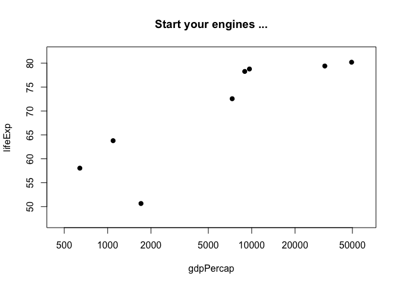
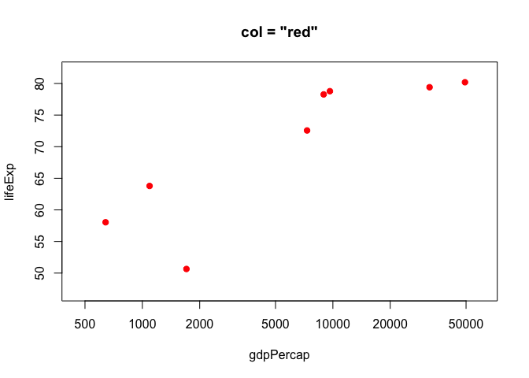
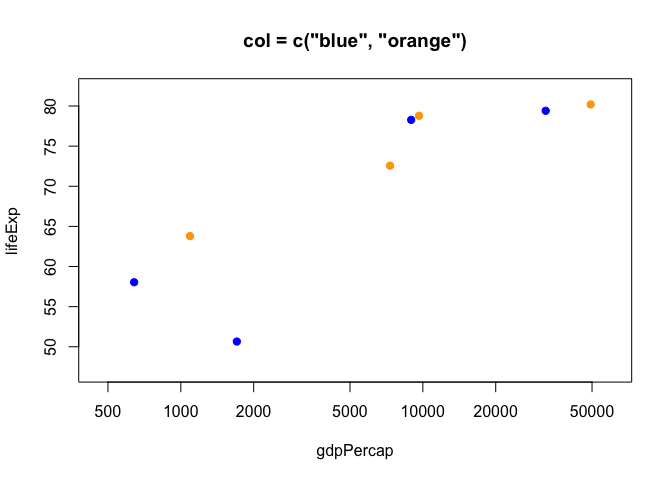
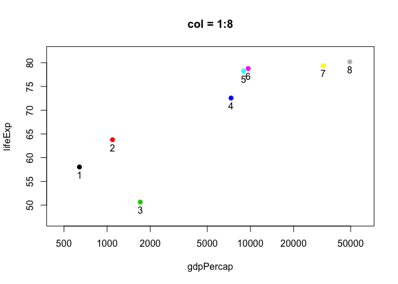
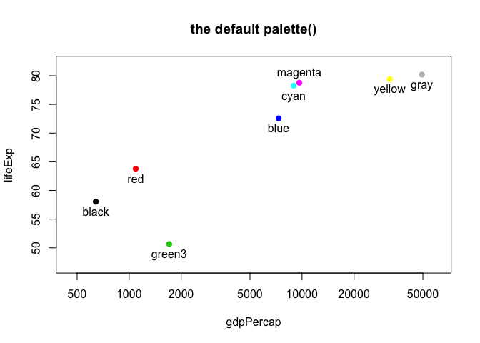
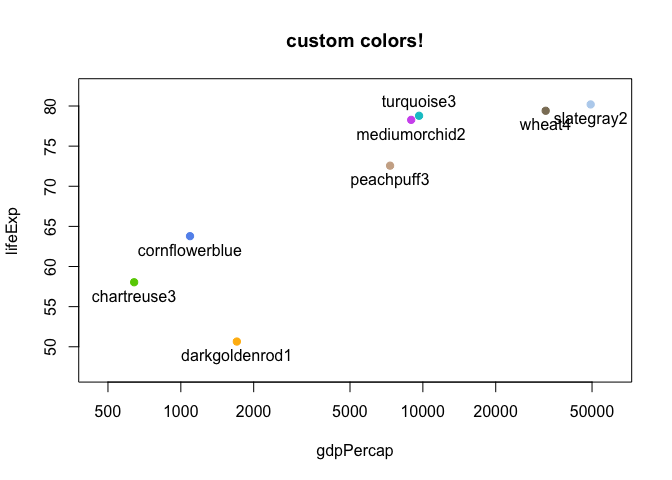
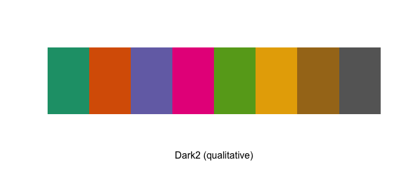
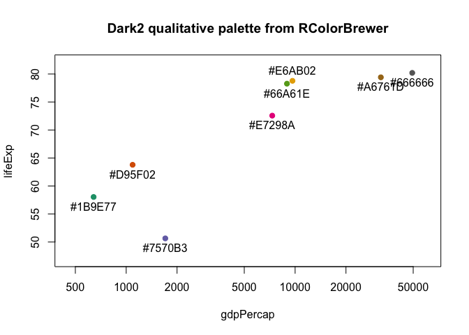
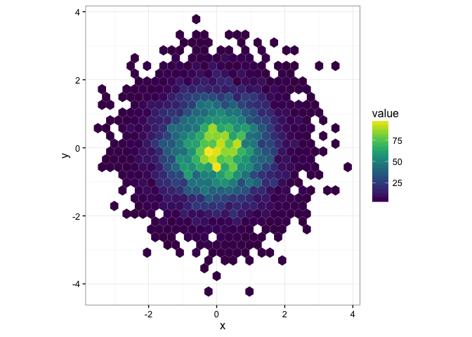
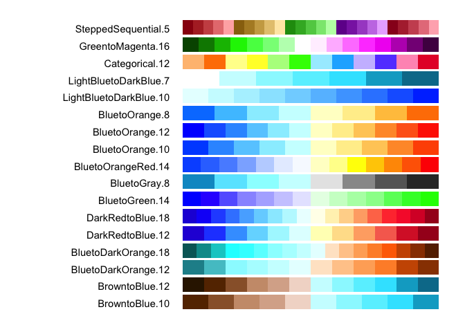

Using colors in R
- Load the Gapminder data and
dplyr - Change the default plotting symbol to a solid circle
- Basic color specification and the default palette
- What colors are available? Ditto for symbols and line types
- RColorBrewer
- viridis
- Hexadecimal RGB color specification
- Alternatives to the RGB color model, especially HCL
- Accomodating color blindness
- Clean up
- References
Load the Gapminder data and dplyr
suppressPackageStartupMessages(library(dplyr))
library(gapminder)Change the default plotting symbol to a solid circle
The color demos below will be more effective if the default plotting symbol is a solid circle. We limit ourselves to base R graphics in this tutorial, therefore we use par(), the function that queries and sets base R graphical parameters. In an interactive session or in a plain R script, do this:
## how to change the plot symbol in a simple, non-knitr setting
opar <- par(pch = 19)Technically, you don’t need to make the assignment, but it’s a good practice. We’re killing two birds with one stone:
- Changing the default plotting symbol to a filled circle, which has code 19 in R. (Below I link to some samplers showing all the plotting symbols, FYI.)
- Storing the pre-existing and, in this case, default graphical parameters in
opar.
When you change a graphical parameter via par(), the original values are returned and we’re capturing them via assignment to opar. At the very bottom of this tutorial, we use opar to restore the original state.
Big picture, it is best practice to restore the original, default state of hidden things that affect an R session. This is polite if you plan to inflict your code on others. Even if you live on an R desert island, this practice will prevent you from creating maddening little puzzles for yourself to solve in the middle of the night before a deadline.
Because of the way figures are handled by knitr, it is more complicated to change the default plotting symbol throughout an R Markdown document. To see how I’ve done it, check out a hidden chunk around here in the source of this page.
Basic color specification and the default palette
I need a small well-behaved excerpt from the Gapminder data for demonstration purposes. I randomly draw 8 countries, keep their data from 2007, and sort the rows based on GDP per capita. Meet jdat.
jdat
#> # A tibble: 8 × 6
#> country continent year lifeExp pop gdpPercap
#> <fctr> <fctr> <int> <dbl> <int> <dbl>
#> 1 Eritrea Africa 2007 58.040 4906585 641.3695
#> 2 Nepal Asia 2007 63.785 28901790 1091.3598
#> 3 Chad Africa 2007 50.651 10238807 1704.0637
#> 4 Jamaica Americas 2007 72.567 2780132 7320.8803
#> 5 Cuba Americas 2007 78.273 11416987 8948.1029
#> 6 Costa Rica Americas 2007 78.782 4133884 9645.0614
#> 7 Germany Europe 2007 79.406 82400996 32170.3744
#> 8 Norway Europe 2007 80.196 4627926 49357.1902A simple scatterplot, using plot() from the base package graphics.
j_xlim <- c(460, 60000)
j_ylim <- c(47, 82)
plot(lifeExp ~ gdpPercap, jdat, log = 'x', xlim = j_xlim, ylim = j_ylim,
main = "Start your engines ...")
You can specify color explicitly by name by supplying a character vector with one or more color names (more on those soon). If you need a color for 8 points and you input fewer, recycling will kick in. Here’s what happens when you specify one or two colors via the col = argument of plot().
plot(lifeExp ~ gdpPercap, jdat, log = 'x', xlim = j_xlim, ylim = j_ylim,
col = "red", main = 'col = "red"')
plot(lifeExp ~ gdpPercap, jdat, log = 'x', xlim = j_xlim, ylim = j_ylim,
col = c("blue", "orange"), main = 'col = c("blue", "orange")')
You can specify color explicitly with a small positive integer, which is interpreted as indexing into the current palette, which can be inspected via palette(). I’ve added these integers and the color names as labels to the figures below. The default palette contains 8 colors, which is why we’re looking at data from eight countries. The default palette is ugly.
plot(lifeExp ~ gdpPercap, jdat, log = 'x', xlim = j_xlim, ylim = j_ylim,
col = 1:n_c, main = paste0('col = 1:', n_c))
with(jdat, text(x = gdpPercap, y = lifeExp, pos = 1))
plot(lifeExp ~ gdpPercap, jdat, log = 'x', xlim = j_xlim, ylim = j_ylim,
col = 1:n_c, main = 'the default palette()')
with(jdat, text(x = gdpPercap, y = lifeExp, labels = palette(),
pos = rep(c(1, 3, 1), c(5, 1, 2)))) 
You can provide your own vector of colors instead. I am intentionally modelling best practice here too: if you’re going to use custom colors, store them as an object in exactly one place, and use that object in plot calls, legend-making, etc. This makes it much easier to fiddle with your custom colors, which few of us can resist.
j_colors <- c('chartreuse3', 'cornflowerblue', 'darkgoldenrod1', 'peachpuff3',
'mediumorchid2', 'turquoise3', 'wheat4', 'slategray2')
plot(lifeExp ~ gdpPercap, jdat, log = 'x', xlim = j_xlim, ylim = j_ylim,
col = j_colors, main = 'custom colors!')
with(jdat, text(x = gdpPercap, y = lifeExp, labels = j_colors,
pos = rep(c(1, 3, 1), c(5, 1, 2)))) 
What colors are available? Ditto for symbols and line types
Who would have guessed that R knows about “peachpuff3”? To see the names of all 657 the built-in colors, use colors().
head(colors())
#> [1] "white" "aliceblue" "antiquewhite" "antiquewhite1"
#> [5] "antiquewhite2" "antiquewhite3"
tail(colors())
#> [1] "yellow" "yellow1" "yellow2" "yellow3" "yellow4"
#> [6] "yellowgreen"But it’s much more exciting to see the colors displayed! Lots of people have tackled this – for colors, plotting symbols, line types – and put their work on the internet. Some examples:
- I put color names on a white background and on black (sorry, these are PDFs)
- I printed the first 30 plotting symbols (presumably using code found elsewhere or in documentation? can’t remember whom to credit) (sorry, it’s a PDF)
- In Chapter 3 of R Graphics 1st edition, Paul Murrell shows predefined and custom line types in Figure 3.6 and plotting symbols in Figure 3.10.
- Earl F. Glynn offers an excellent resource on R’s built-in named colors.
RColorBrewer
Most of us are pretty lousy at choosing colors and it’s easy to spend too much time fiddling with them. Cynthia Brewer, a geographer and color specialist, has created sets of colors for print and the web and they are available in the add-on package RColorBrewer. You will need to install and load this package to use.
#install.packages("RColorBrewer")
library(RColorBrewer)Let’s look at all the associated palettes.
display.brewer.all()
They fall into three classes. From top to bottom, they are
- sequential: great for low-to-high things where one extreme is exciting and the other is boring, like (transformations of) p-values and correlations (caveat: here I’m assuming the only exciting correlations you’re likely to see are positive, i.e. near 1)
- qualitative: great for non-ordered categorical things – such as your typical factor, like country or continent. Note the special case “Paired” palette; example where that’s useful: a non-experimental factor (e.g. type of wheat) and a binary experimental factor (e.g. untreated vs. treated).
- diverging: great for things that range from “extreme and negative” to “extreme and positive”, going through “non extreme and boring” along the way, such as t statistics and z scores and signed correlations
You can view a single RColorBrewer palette by specifying its name:
display.brewer.pal(n = 8, name = 'Dark2')
The package is, frankly, rather clunky, as evidenced by the requirement to specify n above. Sorry folks, you’ll just have to cope.
Here we revisit specifying custom colors as we did above, but using a palette from RColorBrewer instead of our artisanal “peachpuff3” work of art. As before, I display the colors themselves but you’ll see we’re not getting the friendly names you’ve seen before, which brings us to our next topic.
j_brew_colors <- brewer.pal(n = 8, name = "Dark2")
plot(lifeExp ~ gdpPercap, jdat, log = 'x', xlim = j_xlim, ylim = j_ylim,
col = j_brew_colors, main = 'Dark2 qualitative palette from RColorBrewer')
with(jdat, text(x = gdpPercap, y = lifeExp, labels = j_brew_colors,
pos = rep(c(1, 3, 1), c(5, 1, 2)))) 
viridis
In 2015 Stéfan van der Walt and Nathaniel Smith designed new color maps for matplotlib and presented them in a talk at SciPy 2015. The viridis R package provides four new palettes for use in R: on CRAN with development on GitHub. From DESCRIPTION:
These color maps are designed in such a way that they will analytically be perfectly perceptually-uniform, both in regular form and also when converted to black-and-white. They are also designed to be perceived by readers with the most common form of color blindness.
I encourage you to install viridis and read the vignette. It is easy to use these palettes in ggplot2 via scale_color_viridis() and scale_fill_viridis(). Taking control of color palettes in ggplot is covered elsewhere: Taking control of qualitative colors in ggplot2.
Here’s are two examples that show the virids palettes.
library(ggplot2)
library(viridis)
ggplot(data.frame(x = rnorm(10000), y = rnorm(10000)), aes(x = x, y = y)) +
geom_hex() + coord_fixed() +
scale_fill_viridis() + theme_bw()

Hexadecimal RGB color specification
Instead of small positive integers and Crayola-style names, a more general and machine-readable approach to color specification is as hexadecimal triplets. Here is how the RColorBrewer Dark2 palette is actually stored:
brewer.pal(n = 8, name = "Dark2")
#> [1] "#1B9E77" "#D95F02" "#7570B3" "#E7298A" "#66A61E" "#E6AB02" "#A6761D"
#> [8] "#666666"The leading # is just there by convention. Parse the hexadecimal string like so: #rrggbb, where rr, gg, and bb refer to color intensity in the red, green, and blue channels, respectively. Each is specified as a two-digit base 16 number, which is the meaning of “hexadecimal” (or “hex” for short). Here’s a table relating base 16 numbers to the beloved base 10 system.
| 1 | 2 | 3 | 4 | 5 | 6 | 7 | 8 | 9 | 10 | 11 | 12 | 13 | 14 | 15 | 16 | |
|---|---|---|---|---|---|---|---|---|---|---|---|---|---|---|---|---|
| hex | 0 | 1 | 2 | 3 | 4 | 5 | 6 | 7 | 8 | 9 | A | B | C | D | E | F |
| decimal | 0 | 1 | 2 | 3 | 4 | 5 | 6 | 7 | 8 | 9 | 10 | 11 | 12 | 13 | 14 | 15 |
Example: the first color in the palette is specified as “#1B9E77”, so the intensity in the green channel is 9E. What does that mean? \[
9E = 9 * 16^1 + 14 * 16^0 = 9 * 16 + 14 = 158
\] Note that the lowest possible channel intensity is 00 = 0 and the highest is FF = 255.
Important special cases that help you stay oriented. Here are the saturated RGB colors, red, blue, and green:
| color_name | hex | red | green | blue |
|---|---|---|---|---|
| blue | #0000FF | 0 | 0 | 255 |
| green | #00FF00 | 0 | 255 | 0 |
| red | #FF0000 | 255 | 0 | 0 |
Here are shades of gray:
| color_name | hex | red | green | blue |
|---|---|---|---|---|
| white, gray100 | #FFFFFF | 255 | 255 | 255 |
| gray67 | #ABABAB | 171 | 171 | 171 |
| gray33 | #545454 | 84 | 84 | 84 |
| black, gray0 | #000000 | 0 | 0 | 0 |
Note that everywhere you see “gray” above, you will get the same results if you substitute “grey”. We see that white corresponds to maximum intensity in all channels and black to the minimum.
To review, here are the ways to specify colors in R:
- a positive integer, used to index into the current color palette (queried or manipulated via
palette()) - a color name among those found in
colors() - a hexadecimal string; in addition to a hexadecimal triple, in some contexts this can be extended to a hexadecimal quadruple with the fourth channel referring to alpha transparency
Here are some functions to read up on if you want to learn more – don’t forget to mine the “See Also” section of the help to expand your horizons: rgb(), col2rgb(), convertColor().
Alternatives to the RGB color model, especially HCL
The RGB color space or model is by no means the only or best one. It’s natural for describing colors for display on a computer screen but some really important color picking tasks are hard to execute in this model. For example, it’s not obvious how to construct a qualitative palette where the colors are easy for humans to distinguish, but are also perceptually comparable to one other. Appreciate this: we can use RGB to describe colors to the computer but we don’t have to use it as the space where we construct color systems.
Color models generally have three dimensions, as RGB does, due to the physiological reality that humans have three different receptors in the retina. (Here is an informative blog post on RGB and the human visual system.) The closer a color model’s dimensions correspond to distinct qualities people can perceive, the more useful it is. This correspondence facilitates the deliberate construction of palettes and paths through color space with specific properties. RGB lacks this concordance with human perception. Just because you have photoreceptors that detect red, green, and blue light, it doesn’t mean that your perceptual experience of color breaks down that way. Do you experience the color yellow as a mix of red and green light? No, of course not, but that’s the physiological reality. An RGB alternative you may have encountered is the Hue-Saturation-Value (HSV) model. Unfortunately, it is also quite problematic for color picking, due to its dimensions being confounded with each other.
What are the good perceptually-based color models? CIELUV and CIELAB are two well-known examples. We will focus on a variant of CIELUV, namely the Hue-Chroma-Luminance (HCL) model. It is written up nicely for an R audience in Zeileis, et al (see References for citation and link). There is a companion R package colorspace, which will help you to explore and exploit the HCL color model. Finally, this color model is fully embraced in ggplot2 (as are the RColorBrewer palettes).
Here’s what I can tell you about the HCL model’s three dimensions:
- Hue is what you usually think of when you think “what color is that?” It’s the easy one! It is given as an angle, going from 0 to 360, so imagine a rainbow donut.
- Chroma refers to colorfullness, i.e. how pure or vivid a color is. The more something seems mixed with gray, the lower its chromaticity. The lowest possible value is 0, which corresponds to actual gray. The maximum value varies with luminance.
- Luminance is related to brightness, lightness, intensity, and value. Low luminance means dark and indeed black has luminance 0. High luminance means light and white has luminance 1.
Full disclosure: I have a hard time really grasping and distinguishing chroma and luminance. As we point out above, they are not entirely independent, which speaks to the weird shape of the 3 dimensional HCL space.
Figure 6.6 in Wickham’s ggplot2 book is helpful for understanding the HCL color space.

Figure 6.6 of Wickham’s ggplot2 book
Paraphrasing Wickham: Each facet or panel depicts a slice through HCL space for a specific luminance, going from low to high. The extreme luminance values of 0 and 100 are omitted because they would, respectively, be a single black point and a single white point. Within a slice, the centre has chroma 0, which corresponds to a shade of grey. As you move toward the slice’s edge, chroma increases and the color gets more pure and intense. Hue is mapped to angle.
A valuable contribution of the colorspace package is that it provides functions to create color palettes traversing color space in a rational way. In contrast, the palettes offered by RColorBrewer, though well-crafted, are unfortunately fixed.
Here is an article that uses compelling examples to advocate for perceptually based color systems and to demonstrate the importance of signalling where zero is in colorspace:
Accomodating color blindness
The dichromat package (on CRAN) will help you select a color scheme that will be effective for color blind readers.
# install.packages("dichromat")
library(dichromat)This colorschemes list contains 17 color schemes “suitable for people with deficient or anomalous red-green vision”.

What else does the dichromat package offer? The dichromat() function transforms colors to approximate the effect of different forms of color blindness, allowing you to assess the performance of a candidate scheme. The command data("dalton") will make two objects available which represent a 256-color palette as it would appear with normal vision, with two types of red-green color blindness, and with green-blue color blindness.
Clean up
## NOT RUN
## execute this if you followed my code for
## changing the default plot symbol in a simple, non-knitr setting
## reversing the effects of this: opar <- par(pch = 19)
par(opar)References
Achim Zeileis, Kurt Hornik, Paul Murrell (2009). Escaping RGBland: Selecting Colors for Statistical Graphics. Computational Statistics & Data Analysis, 53(9), 3259-3270. DOI | PDF
Vignette for the colorspace package
Earl F. Glynn (Stowers Institute for Medical Research)
- excellent resources for named colors, i.e. the ones available via
colors() - informative talk “Using Color in R”, though features some questionable use of color itself
Blog post My favorite RGB color on the Many World Theory blog
ggplot2: Elegant Graphics for Data Analysis available via SpringerLink by Hadley Wickham, Springer (2009) | online docs (nice!) | author’s website for the book, including all the code | author’s landing page for the package
- Section 6.4.3 Colour
“Why Should Engineers and Scientists Be Worried About Color?” by Bernice E. Rogowitz and Lloyd A. Treinish of IBM Research , h/t @EdwardTufte.